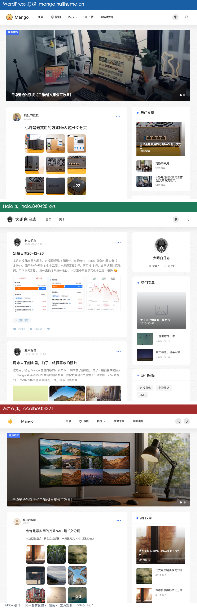

三方差异矩阵 · WordPress 原版 vs Halo 版 vs Astro 复刻版
对应问题：
对比hali版和原版，和astro版的差异在哪里（hali版即 Halo 版） 三个对象： ① WordPress 原版https://mango.huitheme.cn/（前六轮一直用的基准） ② Halo 版https://halo.840428.xyz/（「大明白日志」，你自己的线上站） ③ Astro 版http://localhost:4321/（/Users/ming/mango-astro，六轮验收后的 v6） 同框对照图：对比-三方-原版vs-Halo-vs-Astro.png（940×2892，同一 1440px 视口、同一box=(250,0,1190,900)裁切、均浅色） 生成时间：2026-11-07 后续更新（06:45，重要）：Halo 站调整了后台设置，已开启首页轮播并置顶两篇文章，本报告里「Halo 无轮播」的结论已过时。最新对照见Halo设置调整后-重新对比.md/.html与对比-三方-Halo新设置-原版vsHalo-vsAstro.png；下面涉及轮播的旧描述保留作历史记录。 阅读方式：HTML 版右上角可切「日间 / 夜间 / 系统」，选择会被记住；也可用?theme=dark直接以夜间打开。Markdown 版无切换。

对照图是三站浅色模式实拍，不随报告主题变化；夜间模式只切换报告自身界面。
1. 一句话结论 🎯
这不是「三个实现水平」，而是「一个基准 + 一个一比一复刻 + 一个有意定制」。
| 版本 | 它到底是什么 | 和原版的关系 |
|---|---|---|
| WordPress 原版 | Mango 主题官方演示站，PHP / Bootstrap 5 / Fancybox | 基准 |
| Astro v6 | 不拷贝原版 CSS，按数值与结构从零重写的静态复刻 | ≈98% 对齐原版（六轮总验收结论） |
| Halo 版 | 直接搬原版 style.css，再叠 20KB mango.css 主动改版 |
刻意偏离原版，改成了「大明白日志」 |
所以最扎眼的那些差别（没有轮播、标题不缩进、九宫格满宽、侧栏多一张作者卡、显示绝对日期）不是 Halo 版漏做，而是 2026-10-25 起一条条写进定制层的决定。
换句话说：拿「像不像原版 Mango 演示站」当尺子 → Astro 明显更接近；拿「适不适合当个人博客」当尺子 → Halo 更好用（在线后台、真实评论与浏览数、插件生态）。
2. 三方身份与 CSS 血缘 🔍
| WordPress 原版 | Halo 版 | Astro v6 | |
|---|---|---|---|
| 程序 | WordPress（PHP） | Halo 2.26.0（Java SSR + Thymeleaf） | Astro 5 SSG |
| 主题来源 | Mango Version: 1.6.20241202 |
/themes/theme-mango/，style.css?v=1.0.0-20261023a + mango.css?v=1.0.0-20261025n |
自建组件 + global.css + Tailwind |
| CSS | /tmp/mango-style.css 31,101 B |
/tmp/halo-style.css 31,549 B（同源）+ /tmp/halo-mango.css 20,839 B（定制层） |
按原版数值重写，不复用原版 class |
| 同源证据 | — | 文件头同为 Theme Name: Mango / Author: Crazy uncle / Version: 1.6.20241202；post_loop_conter 同在 195 行、post_img_2 同在 203 行；差别只是把硬编码色值换成 var(--ds_main_color, #4270f6) |
数值对齐：.moment-content-area{margin-left:60px}、.post-images{width:66%}、post-img-3 首图 62.67% / 其余 29.33% |
| 版心 | @media(min-width:1200px){.container{max-width:900px}} |
HTML 内联 min(900px, calc(100% - 48px)) |
max-w-mango: 900px |
| 主色 | #4270f6 |
--ds_main_color:#4270f6，由主题设置注入 |
mango.DEFAULT:#4270f5 / dark:#0a59f8 |
| 暗色 | 手动切换 | localStorage["isDarkMode"]，缺省跟随 prefers-color-scheme，首屏防闪烁 |
localStorage["theme"]，默认浅色，首屏防闪烁 |
关键判断：Halo 站的 style.css 和我们的原版基准是同一套 CSS；差异几乎全部来自后面那层 mango.css。Astro 则是「不继承 class、只继承数值」的第三条路。
3. 逐项视觉差异矩阵 📐
✅ = 与原版一致 ❌ = 与原版不同 ⚠️ = 形态一致但数据/实现不同
| # | 部位 | WordPress 原版（上） | Halo 版（中） | Astro v6（下） | 差异归属 |
|---|---|---|---|---|---|
| 1 | 轮播 banner | ✅ 900×350 工作台图 + 「置顶精彩」角标 + 标题 + 指示器/箭头 | ✅ 新设置已开启（2 条置顶精彩；06:10 前完全没有） | ✅ 完整复刻（含 prev/next、indicator、遮罩） | 已对齐（素材仍有差） |
| 2 | 顶栏 logo | 芒果图 + Mango |
圆形猫咪头像 + 大明白日志 |
橙黄芒果图 + Mango |
Halo 定制 |
| 3 | 顶栏导航 | 分类菜单 8 项（风景 / 科技 / 旅拍 / Once主题 / 主题下载 / 旅游地图…） | 只有「首页 / 关于」 | 风景 / 旅拍 / 科技▾ / 主题下载 / 旅游地图 | Halo 定制 |
| 4 | 顶栏右侧 | 搜索 + 灯泡圆按钮 | 灯泡圆按钮 + 搜索图标（无圆底） | 2 个 30×30 圆按钮，点搜索展开 120px 顶部条 | 细微实现差 |
| 5 | 背景水波纹 | 浅色下可见 | 明显（bg.svg） |
浅色偏淡、暗色清晰 | 素材强度差 |
| 6 | 版心宽度 | 900px | 900px | 900px | ✅ 一致 |
| 7 | 卡片内容缩进 | 60px（标题区对齐头像右侧） | 0（标题/摘要/图片与头像左对齐） | 60px | Halo 定制（最刺眼） |
| 8 | 时间格式 | 相对时间「4 年前 / 5 年前」 | 绝对时间 2026-10-26 11:11 |
相对时间「X 年前 / X 月前」 | Halo 定制 |
| 9 | 摘要 | 14px / 300 / 1.8 行高，不截断 | 13.5px / #8c8989 / 3 行截断 |
原版式 14px / 300 / 1.8 | Halo 定制 |
| 10 | 九宫格 | width:66%、正方形、+23 叠加、8 套布局 |
满宽 3 列 grid / gap 5px；1 张 16:9、2/4 张 4:3、其余 1:1 |
width:66%、正方形、+23、8 套布局（移出 @layer 防 purge） |
Halo 定制 |
| 11 | 标签胶囊 | #标签 浅蓝 ✅ |
#定投日志 浅蓝 ✅ |
#欢迎 浅蓝 ✅ |
✅ 一致 |
| 12 | 底部三数 | 评论 / 浏览 / 点赞（演示值） | ⚠️ 0评论 / 13浏览 / 0，数据库实时 |
⚠️ 1,024 浏览 / 56 点赞，frontmatter 静态 |
平台能力差 |
| 13 | 侧栏第一块 | 直接是「热门文章」 | ❌ 先来一张作者卡 author_show_box（头像 + 名称 + 文章7 / 评论2） |
直接是「热门文章」 | Halo 定制 |
| 14 | 热门文章副行 | 29条留言 / 18条留言 / 14条留言 |
2026-10-26 / 2026-10-22 / 2026-08-21 |
29 条留言 / 34 条留言 |
Halo 定制 |
| 15 | 热门标签 / 最近评论 | ✅ 有 | ✅ 有 | ✅ 有（最近评论补到 5 条） | ✅ 一致 |
| 16 | 页脚 | footbox + links + copyright |
同左 | 同左 + 「京ICP备00000000号」占位 | ✅ 一致 |
| 17 | 内容密度 | 8 张 post_loop + 1 轮播 |
7 张 post_loop + 1 轮播（2 条） |
首页 8 篇（共 16 篇 / 2 页，/page/2/ 已实测 200） |
内容差 |
| 18 | 暗色默认 | 手动 | 跟随系统 | 默认浅色 | 策略差，详见第 6 节 |
读图要点：上段和下段几乎是同一套骨架（轮播、缩进、方形九宫格、+23、侧栏顺序、留言文案）；中段是另一条路线（无轮播、不缩进、满宽矩形图、作者卡、日期文案）。
4. Halo 为什么长这样：定制层原文 🧩
/tmp/halo-mango.css 里有明确中文注释记录这些决定，且同一文件前后两版规则层叠，后段覆盖前段：
4.1 取消 60px 缩进（:863-879）
/* ============================================================
卡片内容对齐（2026-10-25）
------------------------------------------------------------
原版 .post_loop_conter 有 60px 左缩进（对齐头像右侧），
宽版下会在图片左侧留出空白带；这里取消缩进让图片/标签满宽，
标题区（标题 + 摘要）居中，视觉重心落在卡片中轴。
============================================================ */
.post_loop .post_loop_conter { margin-left: 0; }
对照原版 /tmp/mango-style.css:195：
.post_loop .post_loop_conter{margin-left:60px;}
4.2 九宫格从 66% 改成满宽 grid（:765-795，覆盖 :59-93）
/* 九宫格：全档位统一为满宽栅格（原版固定 66% 宽，900 下图片只有 88px，过小） */
.post_images { width: 100%; display: grid; grid-template-columns: repeat(3, 1fr); gap: 5px; margin: 0; }
.post_images a { width: auto !important; margin: 0 !important; float: none; aspect-ratio: 1 / 1; }
.post_img_1 a { aspect-ratio: 16 / 9; max-height: 400px; }
.post_img_2 a { aspect-ratio: 4 / 3; }
而原版 /tmp/mango-style.css:200-205 是 width:66% + post_img_3 首图 62.67% / 其余 29.33%；Astro global.css:257-284 逐条照抄了这组数值。
4.3 摘要从 2 行变 3 行弱化（:881-890，覆盖 :758-763）
/* 正文摘录：最多三行，弱化颜色，与标题形成层次 */
.post_loop .post_loop_conter .post_loop_title_box p {
display: -webkit-box; -webkit-line-clamp: 3; -webkit-box-orient: vertical; overflow: hidden;
color: #8c8989; font-size: 13.5px; line-height: 1.75; margin-bottom: 14px;
}
⚠️ 校验提示：
mango.css前段:59-93仍写着width:66%/aspect-ratio:1/1，:758-763仍写着 2 行截断；这些是历史规则，最终生效的是后段 765–890 行。引用时别拿前段当结论。
4.4 其余定制
| 定制 | 证据 |
|---|---|
| 新增作者卡 | :457 .author_show_box；首页 DOM 出现 1 次 |
| 轮播开关（06:45 已开启） | 旧 HTML id="banner" 0 次、style.css:161 与 mango.css:47-56 的 #banner 规则一直在 → 当时是模板不输出；新 HTML 已有 1 个 #banner / 2 个 carousel-item，CSS 逐字节未变，证明只是后台设置 |
| 导航简化 | /tmp/halo-home.html:125-144 header-menu 仅「首页 / 关于」 |
| 绝对时间 | :251 <span>2026-10-26 11:11</span>；全站 7 处 YYYY-MM-DD HH:mm、0 处「年前/月前」 |
| 热门文章副行改日期 | :1114-1116 / :1140-1142 / :1166-1168 都是 2026-10-26 这类日期 |
| 侧栏缩略图放大 | :841-852 @container(min-width:380px) 把图改 88px、标题 3 行 |
| 插件生态 | HTML :83-88：PluginCommentWidget 3.1.2、PluginSearchWidget 1.8.0；另有 plugin-douban |
5. 平台能力差异（不是视觉，是「能不能」）⚙️
| 维度 | WordPress 原版 | Halo 版 | Astro v6 |
|---|---|---|---|
| 渲染 | PHP 动态 | 动态 SSR（Halo 2.26 + Thymeleaf） | 静态 SSG（构建 51 个 HTML） |
| 内容管理 | WP 后台 | Halo 在线后台（改完即生效） | src/content/posts/*.md + Content Collections（Zod schema），改完要重新构建 |
| 评论 | WP 原生 / AJAX | PluginCommentWidget 3.1.2，真实评论 |
src/config/comment.ts 可配 Giscus，当前未启用，显示「评论未启用」占位 |
| 搜索 | WP 搜索 | PluginSearchWidget 1.8.0（服务端） |
/search.astro 客户端过滤 frontmatter |
| 浏览 / 点赞 | 动态计数 | 数据库实时（13 浏览等） | frontmatter 静态值 |
| 图片与灯箱 | 媒体库 + Fancybox | 媒体库 + srcset + Fancybox |
public/images/ + 自写按 data-gallery 分组的灯箱 |
| 部署 | 演示站主机 | 自有服务器 + Cloudflare（server: cloudflare） |
任意静态托管（工程已有 wrangler.toml / DEPLOYMENT.md） |
| 优势 | 功能最完整 | 后台好用、数据真实、插件丰富 | 无服务器/数据库成本、CDN 极快、可进 Git |
| 代价 | 要维护 WP | 要维护 Java 服务与数据库 | 动态计数/评论必须外接服务 |
顺带区分：本次对比的 Astro 工程是
mango-astro，没有 Sveltia CMS；之前加可视化后台的是另一个~/Documents/firefly-blog（已部署到www.840428.xyz），别混在一起。
6. 日 / 夜间模式：三站分别怎么切
这份报告本身也补上了这个能力：右上角「日间 / 夜间 / 系统」三态切换，选择记在 localStorage["report-theme"]（light / dark / system），<head> 内联脚本在渲染前先应用（无闪烁）；未做过手动选择时，也可用 ?theme=light / ?theme=dark 直接以指定模式打开，方便分享或截图（优先级：本地选择 > URL 参数 > 跟随系统）。对照图是三站浅色模式实拍，不随报告主题变化，夜间模式下仍保持白底以便比对。
| WordPress 原版 | Halo 版 | Astro v6 | 本报告 | |
|---|---|---|---|---|
| 状态键 | html.dark 类（灯泡按钮） |
localStorage["isDarkMode"]：1 暗 / 0 浅 / 缺省跟随系统 |
localStorage["theme"]，默认浅色 |
localStorage["report-theme"]：light / dark / system |
| 默认值 | 浅色，手动切 | 跟随 prefers-color-scheme |
浅色 | 跟随系统 |
| 切换入口 | 顶栏灯泡 | 顶栏灯泡 / 直接改 localStorage | 顶栏灯泡 | 右上角三态按钮 |
| 防闪烁 | 主题脚本 | ✅ head 内联脚本 | ✅ head 内联脚本 | ✅ head 内联脚本 |
| 实现方式 | style.css 里成组的 .dark 色值 |
--ds_background / --ds_main_color 由主题设置注入 |
global.css 集中 .dark 规则表（卡片 / 侧栏 / 页脚 / 标签 / 分页） |
CSS 变量 + data-theme="light" 或 "dark" |
| 已知坑 | 暗色截图在 --no-proxy-server 下外链 banner / 侧栏图加载不全，只能比色板与布局 |
headless Chrome 默认截出暗色，需 CDP 设 isDarkMode="0" + reload 才得浅色 |
v4 曾用 .dark{filter:brightness(.85)} 整页发灰，filter 还会新建包含块影响 position:fixed；v6 已改成精确色值 |
夜间只换报告 UI，不改对照截图 |
三份已验证的暗色证据：
对比-暗色-原版vs-v6.png：原版用 CDP 手动document.documentElement.classList.add('dark')，Astro 用localStorage.setItem('theme','dark')+Page.reload。结果 Astrohtml.className=dark、背景#191919、顶栏#151516、卡片#212121、波纹清晰、九宫格与+23正常，无 v4 的整体发灰。- Halo：
/tmp/halo-top.png（默认暗色）与/tmp/halo-light-top.png（设isDarkMode="0"后 reload，html.className=""确认浅色生效）。 - 本报告：
报告-日夜模式预览.png，同一页面分别以?theme=light/?theme=dark无头截图后上下拼接，检查目录、表格、代码块、引用块、复制按钮与对照图在两态下都可读。
一个容易混的点：「报告夜间」不等于「网站暗色」。三联对照图固定是浅色实拍，夜间模式只是让报告外壳变暗；要看三站自己的暗色，请查
对比-暗色-原版vs-v6.png和 Halo 的isDarkMode截图。
7. 差异归类：一眼看懂谁该背锅 🧭
| 类别 | 包含项 | 结论 |
|---|---|---|
| A. 复刻对齐 | 60px 缩进、66% 方形九宫格、相对时间、轮播、分类导航、N 条留言、侧栏顺序、分页 |
Astro ≈ 原版，Halo 不同 |
| B. Halo 有意定制 | 去缩进、满宽 grid 九宫格、3 行灰摘要、作者卡、绝对日期、日期副行、导航简化、跟随系统暗色（轮播已于 06:45 恢复，不再属于定制差） | 全部能在 mango.css 找到注释或规则，是设计决策不是缺陷 |
| C. 平台能力 | 实时评论/浏览、在线后台、服务端搜索、插件、SSR vs SSG | Halo 强在动态，Astro 强在静态与可移植 |
| D. 素材与内容 | logo（芒果 / 猫咪）、头像、banner 图、8 篇 vs 7 篇 vs 16 篇分 2 页、备案占位 | 内容不同造成的观感差，与主题实现无关 |
原版 vs Astro 还剩什么差：主要是素材（banner/头像图片）、导航项少了 Once主题 这类演示菜单、留言数字与空格（29条留言 vs 29 条留言）、背景波纹浅色下更淡、页脚多了备案占位。这些属于可接受样本差，不推翻六轮「98% 可收工」的结论。
8. 怎么用这三个版本 🛠️
方向 A：验收「一比一复刻」 ✅
以 WordPress 原版为唯一基准，用 Astro v6 交付；Halo 版不参与验收。 本次三方对比只是说明「为什么你自己的 Halo 站看起来不像」，不是新的整改清单。
方向 B：想把 Astro 改成 Halo 那个样子
按影响从大到小（只动 mango-astro，不动 Halo）：
- 去掉
src/pages/index.astro的<Banner />； global.css的.moment-content-area{margin-left:60px}→0；PostCard.astro的formatTime()改输出YYYY-MM-DD HH:mm；- 摘要加 3 行截断 +
#8c8989/ 13.5px； .post-images从width:66%改100% grid 3 列 / gap 5px，并按张数设16:9、4:3、1:1；- 侧栏最上面插作者卡组件（照
mango.css:457结构）； HotPostsWidget副行从「N 条留言」改日期；- 顶栏
navItems精简成「首页 / 关于」，logo 换站点名； - 暗色默认改跟随
prefers-color-scheme，键名换isDarkMode。
⚠️ 这样做会主动放弃前六轮的一比一成果，除非打算把 Astro 版当成「大明白日志」的新家，否则不建议。
方向 C：想把 Halo 改回原版样子
- 主题设置里重新输出
#banner（CSS 还在，只是模板没渲染）； - 删掉
mango.css:870-872的margin-left:0； - 后台菜单补齐分类导航；
- 时间切相对时间、热门文章副行切「N 条留言」；
- 摘要恢复 14px / 300 / 1.8、不截断；
- 首页侧栏取消作者卡；
- 九宫格恢复
width:66%+ 正方形裁切。
方向 D（建议）💡
保持现状，各司其职：halo.840428.xyz 继续当主博客；mango-astro 作为一比一复刻的技术样板 / 静态镜像保留。真要补 Astro 的动态能力，优先接 Giscus + 浏览量 API，别反向去改视觉。
9. 数据来源与自洽校验 🔗
| 结论 | 依据 |
|---|---|
| 三方视觉 | 对比-三方-原版vs-Halo-vs-Astro.png（940×2892，上原版 / 中 Halo / 下 Astro）；另有 对比-原版vs-Halo.png、对比-Halo-vs-Astro-v6.png |
| 原版 DOM/CSS | /tmp/mango-demo.html（8 张 post_loop、1 个 id="banner"、13 处相对时间、3 处「N条留言」）、/tmp/mango-style.css:195/199/200/204-205 |
| Halo 身份 | /tmp/halo-home.html：Halo 2.26.0、/themes/theme-mango/、mango.css?v=1.0.0-20261025n、三个插件、isDarkMode 防闪烁、内联 900px 与 --ds_main_color |
| Halo 设置调整后 | /tmp/halo-home-v2.html（46,910 B，06:45）：新增 index_banner / 2 条轮播；两个 CSS 与旧版 SHA256 相同；详见 Halo设置调整后-重新对比.md |
| Halo 定制层 | /tmp/halo-mango.css 20,839 B：:47-56 轮播、:59-93 旧九宫格、:457 作者卡、:758-763 旧摘要、:765-795 新九宫格、:863-890 最终对齐与摘要、:894 图片上边距 |
| Astro 实现 | src/styles/global.css:197-199 / 257-284；/tmp/astro-v6-home.html（运行时首页 182,415 B，含 13 处相对时间、3 处「N 条留言」、0 处绝对日期） |
| 三站暗色 | 对比-暗色-原版vs-v6.png、/tmp/halo-top.png、/tmp/halo-light-top.png、六轮总验收清单的首次暗色验证 |
| 报告日夜切换 | 本页 <head> 内联防闪烁脚本 + CSS 变量 + 右上角三态按钮；报告-日夜模式预览.png（?theme=light / ?theme=dark 两次无头截图拼接） |
| 历轮结论 | 六轮对比-总验收清单.md（达成度约 98%、首次暗色验证通过、/page/2/ 200） |
| Halo 专项 | Halo站-vs-Astro复刻-对比分析.md（CSS 同源鉴定、两个方向操作清单） |
五条自洽校验：
- 同一把尺子：三张截图同为 1440px 视口、同一
(250,0,1190,900)裁切、同为浅色。Halo 默认会跟随系统出暗色，是用 CDP 设isDarkMode="0"后 reload 才拿到浅色图，避免「暗 vs 浅」误判成主题差异。 - CSS 同源不是猜测：
halo-style.css与mango-style.css文件头版本号一致、关键规则行号一致（195 / 203），只是色值变量化。 - 「没有轮播」双重确认：Halo 首页 HTML
id="banner"计数 0，而mango.css与原版style.css的#banner规则都还在 → 模板层不输出，不是样式丢失。 - 计数口径说明：Astro 运行时 HTML 内联了完整 CSS，按字符串统计
post-images/carousel会虚高（24 / 25 次），不能当成 DOM 元素数；Astro 也不复用post_loop/widget_hot_posts这类原版 class，计数为 0 同样不代表缺失。判断一律以三联截图 + 组件源码 + 实测 HTTP 为准。本报告里的「8 篇 / 7 篇」来自实际文章列表与分页实测，不来自字符串计数。 - 报告自身日夜两态实测：用 headless Chrome 分别以
?theme=light/?theme=dark打开同一 HTML，产出报告-日夜模式预览.png；两态下目录、表格、代码块、引用块、复制按钮均正常，夜间文字对比度足够，对照截图保持白底不变色（避免把报告主题误当成站点主题）。打印样式强制回到浅色，避免夜间模式打印出浅字白底。
10. 直接回答你的问题 ✨
差异在哪里？
- 原版 ↔ Astro：差异很小，只剩素材、少量演示菜单、文案空格与静态数据；Astro 是照着原版数值一比一重写的。
- 原版 ↔ Halo：差异最大，且是主动改的——60px 缩进改为 0、九宫格改满宽 grid、摘要弱化、加作者卡、时间改绝对日期、导航砍成两项、侧栏副行改日期（轮播已于 06:45 恢复，此项不再有差）。依据全在
mango.css的中文注释里。 - Halo ↔ Astro：上面那串视觉差 + 平台差（Halo 动态 SSR / 实时计数 / 在线后台，Astro 静态 SSG / frontmatter / 需重新构建）。
没有谁做错了，只是三个站的目标不同。 验收复刻看 Astro，日常写博客用 Halo。
（本页右上角可切「日间 / 夜间 / 系统」，也可直接加 ?theme=dark 以夜间打开；第 6 节列出了三站各自的暗色实现与坑。Halo 设置已变更，最新对照请看 Halo设置调整后-重新对比.html。）